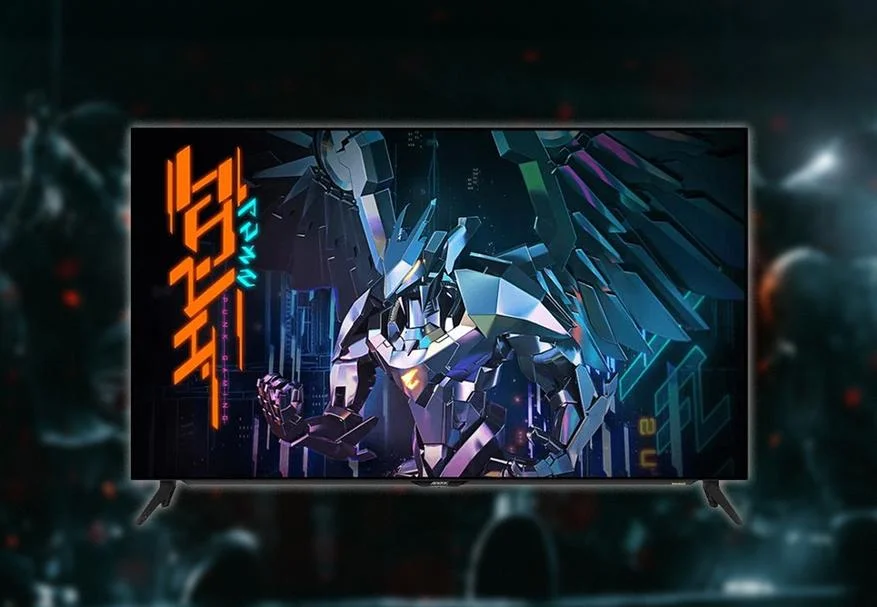
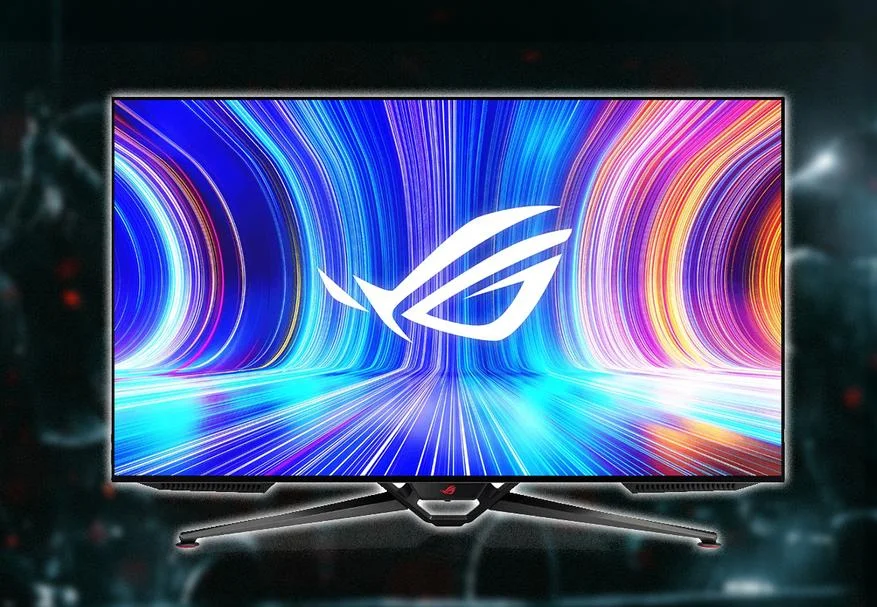
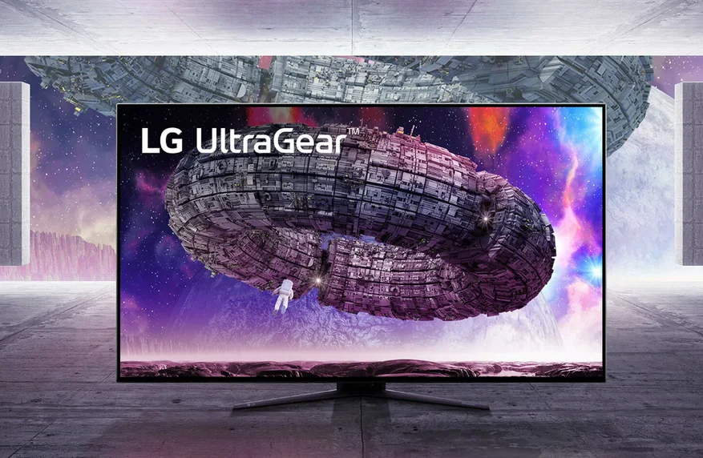
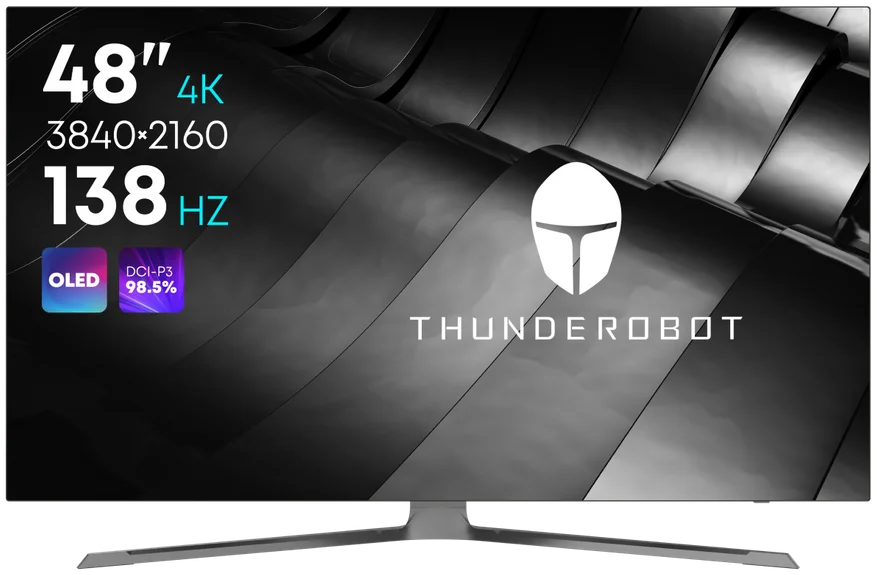
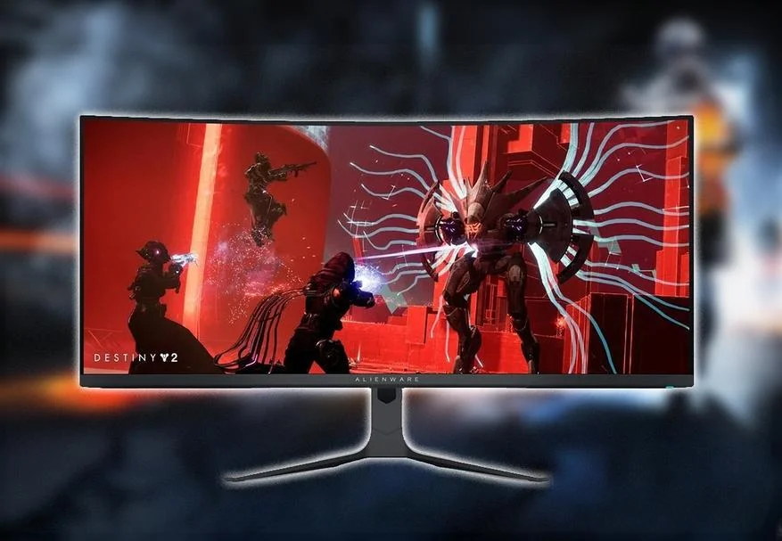

5 игровых OLED мониторов, которые стоит рассматривать для покупки в 2023 году
Всем привет. ОLED-мониторы — это современные и передовые технологии, которые обеспечивают потрясающее качество изображения с минимальной задержкой. Современные игроки требуют от своей техники максимальной производительности и качества. Ведь от того, насколько быстро и точно отображается игровая сцена, зависит не только успех в игре, но и удовольствие от процесса. Один из ключевых факторов, влияющих на качество изображения — это монитор. ОLED матрица является одной из самых передовых. Она обеспечивает глубокий черный, яркие насыщенные тона и максимальный контраст, полностью погружая в процесс гейминга. В этой подборке посмотрим на 10 игровых OLED дисплеев, которые стоит рассматривать для покупки в 2023 году. Поехали.
Монитор GIGABYTE AORUS FO48U OLED
Этот монитор является идеальным выбором для игроков, которые хотят максимально быстрый и плавный гейминг. Матрица монитора — 120 Гц, а время отклика всего 1 мс. Также в нем есть поддержка технологии Adaptive Sync, которая синхронизирует частоту кадров с графической картой, что позволяет уменьшить разрывы передачи изображения и рывки на экране. Монитор GIGABYTE AORUS FO48U имеет широкий угол обзора, достигающий 178 градусов и покрывает 98% контрастного пространства (DCI-P3). Это позволяет увидеть детали и оттенки, которые могут быть упущены у аналогов. Данная модель также оснащена различным функционалом. Это и AORUS Dashboard, что даёт возможность позволяет отслеживать параметры системы, регулировать макросы и многое другое. В целом, GIGABYTE AORUS FO48U является отличным решением для игроков, которые хотят наслаждения игровым процессом во всей его красе.
Монитор ASUS ROG Swift PG42UQ OLED
Данная модель может похвастаться ультратонкими рамками, которые позволяют использовать его в многодисплейной конфигурации. Поддерживает HDR1000 и покрывает 98% пространства цвета DCI-P3, что обеспечивает высокую цветопередачу и реалистичное изображение. Что касается частоты обновления ASUS ROG Swift PG42UQ, то она составляет 144 Гц. При этом время отклика всего 1 мс, что делает его идеальным для быстрой игры и динамических сцен. Так же радует технология от NVIDIA, которая называется G-Sync Ultimate. Она устраняет разрывы кадров, обеспечивая более плавное игровое прохождение. Кроме того, монитор имеет встроенную подсветку Aura Sync, которая синхронизирует свет с другими устройствами Aura Sync в Вашей системе, создавая уникальную атмосферу во время игры. Также есть встроенный блок питания и множество разъемов, включая HDMI, DisplayPort и USB 3.0.>
LG UltraGear 48GQ900-B OLED
Монитор LG UltraGear 48GQ900-B — это высококлассный игровой монитор с диагональю экрана 48 дюймов. Он оснащен технологией OLED, что позволяет достичь невероятной глубины черного цвета и насыщенности цветов. Монитор имеет разрешение 3840 x 2160 пикселей (4K UHD), что обеспечивает четкое и детальное изображение. Скорость обновления экрана составляет 120 Гц, что позволяет плавно отображать быстрые движения и действия на экране. В LG также внедрили технологию G-Sync. Она снижает задержку вывода изображения и обеспечивает плавную графику в играх. В комплекте с монитором имеется пультом ДУ, а также есть возможность подключения дополнительных устройств через DisplayPort или HDMI.
Thunderobot KU48F120E OLED
Thunderobot KU48F120E имеет с диагональ 48 дюймов и 4K Ultra HD разрешение. Thunderobot оснащён 138 Гц матрицей с временем отклика 0.1 мс GTG. Этот монитор также оснащен технологией HDR (High Dynamic Range), которая обеспечивает более высокую контрастность и яркость изображения, что делает игры более реалистичными и увлекательными. Thunderobot KU48F120E имеет различные порты ввода, что позволяет подключать к нему различные устройства, такие как ПК, мобильные устройства и игровые консоли. Кроме того, монитор имеет встроенные динамики мощностью 2 по 15 Вт, что обеспечивает качественный звук без необходимости дополнительных колонок.
Alienware AW3423DW OLED
Alienware AW3423DW — это высококачественный игровой монитор, разработанный компанией Dell для требовательных пользователей, которые ищут максимально возможную производительность, а также качество изображения в своих играх. Он имеет 4К разрешение на диагонали 34, что обеспечивает очень широкий диапазон обзора, а также яркие цвета. Также внедрена технология от NVIDIA — G-Sync Ultimate, о которой я писал ранее. Alienware AW3423DW также обладает высоким уровнем яркости (450 кд/м²), что позволяет лучше контролировать яркие цвета. Частота обновления — до 144 Гц. Дополнительные функции монитора включают в себя настройки «режима игры», которые позволяют быстро настраивать настройки цвета и контрастности для каждой игры, а также подсветку RGB на задней панели монитора, которая может быть настроена на под себя.